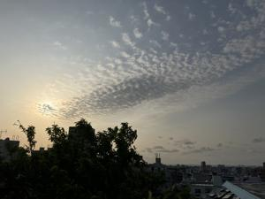
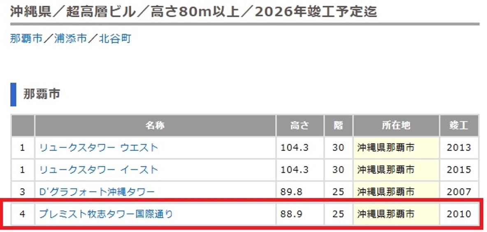
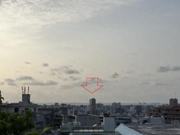

うるがいの話 ある日
最新: 超高層ビル【うるがいの話 ある日】とは 一日だけのプログです
『うるがいの話』の最新一日だけのプログで、通信料が少なく経済的だ。カニの画像をクリックすると全ての日付が載る『うるがいの話』サイトを表示します
|
|
【うるがいの話】 うるがい(ｳﾙｶﾞｲ urugai)とは、『もずくがに』の名前でとても大きくなります。 |
|---|---|
|
|
【カミマヤーの話】 猫のことを方言でマヤーといいます。カミマヤー（kamimayaa）とは、神の猫のことです。 |
|
【たながぁの音楽】 たながぁ（ﾀﾅｶﾞｰ tanagaa）とは手長えびのことで、何種類かあり大きいのは車 エビぐらいになります。 |

|
【ぶながぁの話】 ぶながぁ(ﾌﾞﾅｶﾞｰ bunagaa)とは、赤い髪の毛、赤い身体、そして身長は１ｍ２０ｃｍ ぐらい、川の蟹を食べているの目撃された。場所は沖縄県国頭郡大宜味村のと ある村僕の隣近所に住んでいる爺さんから、聞いた話です。 |
|
|
【ギーマの話】 ギーマ(giima)とは、山原の里山に咲くスズランに似た、 花を付けます。実は食べられます、 気が付くと口の周りが紫になっています。 |
2026年03月09日 (月）超高層ビル
15:43

洗濯物を干した後、海をみる。ビルが邪魔で海が見えない！、い
つからだろうか、調べてみた。１から３番はおもろまちにある３
つの超高層ビル、２０１０年から・・・・・。

写真の中央にあるのは、２０１０年に竣工した４番目の「プレミ
スト牧志タワー国際通り」だ。おもろまちのツインタワー（１と
２）が建つときは、道路反対の住民が反対運動していたのを朝早
くの通勤で長い間、見ていた。その気持ち、遅まきながら分かる
ぜ。ちなみ、今の家に住み着く３２年前頃（１９９４年）の景色
には超高層ビルは無かったのだ。ついでに右隣りにある「とまり
ん」は１９９５年（令和７年４月に開業３０周年の代表取締役社
長は、前の会社のマラソン部のヤビクさん！）も無かったのだ。
